每组从左到右是原录像、R4 实录、本轮 R5 实录。按主面板统一画布，局部保持相同裁切坐标。人物、语言和示例战绩不同，图像并非全画面逐像素相等。
原版来源：雀魂 4.0.16 的 UI_PlayerInfo、UI_TitleBook、UI_ChangeName 预制体和 UI Lua。成就数据用“—”占位；风格算法仍为现有离线累计统计；精选图标当前解释自动选择，不提供服务器收藏功能。Android 真机未测，APK 未更新。
按原预制体关闭图标和按钮范围绘制，保持安全区居中。
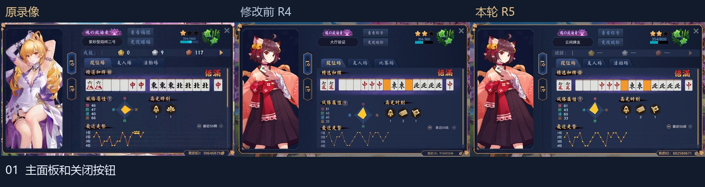
保留原图，昵称使用原版 30 号字体及 39 像素高的文字区。
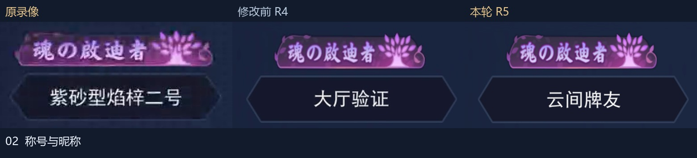
32 → 40 号字，修正内边距和原版蓝色。
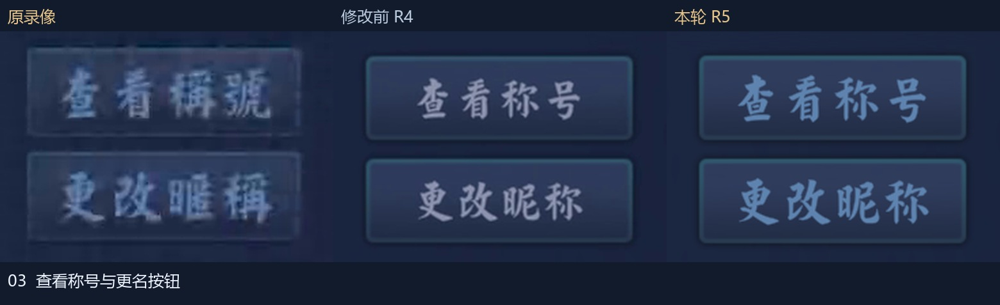
星级恢复 49.5/47.7 尺寸及独立位置；进度用 HYWenHei 30 号字。隐藏的 bgp 保持隐藏。
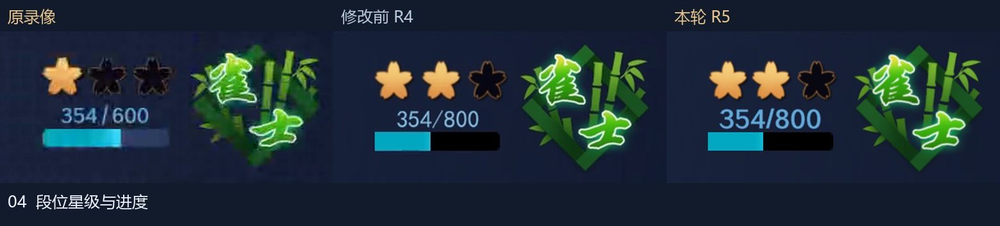
保留九宫格边框，背景恢复 450×962；角色和皮肤沿用当前选择。
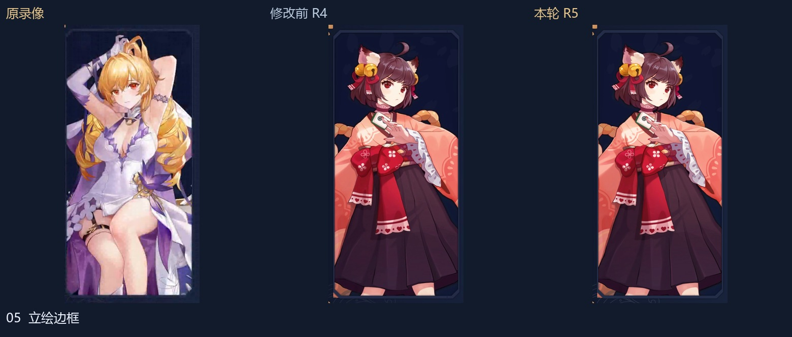
复核 110×208 点击区、100×208 图像区和原图透明留白。
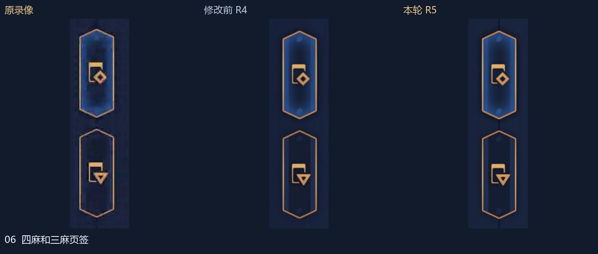
恢复原图外观；未接入的数据用破折号显示，入口只说明统计暂不可用。
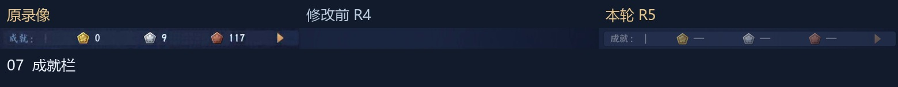
分别校正三个页签位置，修正文字内框、未选中颜色和“活动场”原版文案。
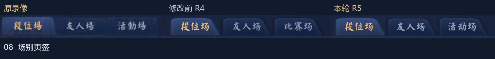
底纹下移 8 像素；增加原版编辑图标，目前说明离线最佳牌型的自动选择方式。
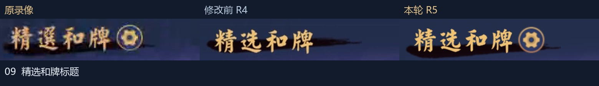
按原 Lua 的牌数缩放、半张间隔和 80×120 比例绘制；背景 1080×180。
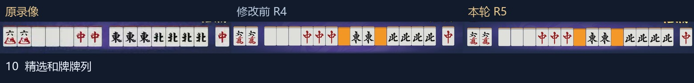
分区上移并修正数值、雷达与轴标签的相对位置，恢复原版字体和颜色。
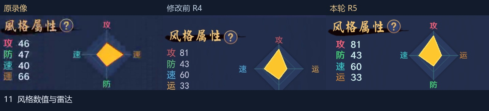
徽章 90×90，常规间隔恢复 14；计数用 HYWenHei。六种离线高光同时出现时压缩间隔防止越界。
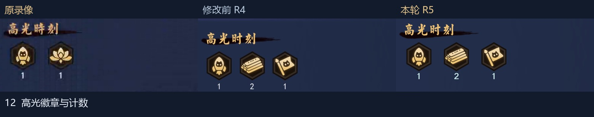
起点与顺位基线校正；使用原图圆点，加入逐点展开和高分猫图标。
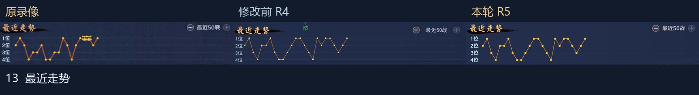
文字恢复 HYWenHei 28 号，复制图标恢复 30×30。
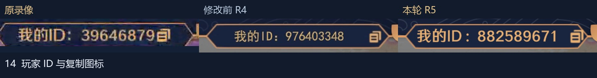
整体上移 15.6；首行、使用中标记和分隔线按预制体复位，保留 99.2 行高。
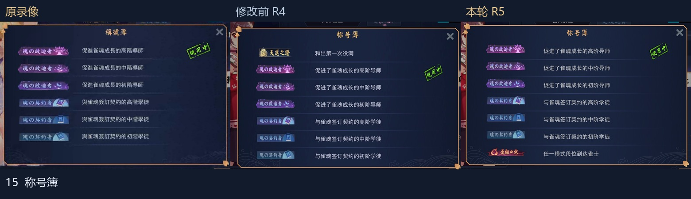
框体 835.48×550.12；恢复输入框、36 号输入文字和 404×102.81 确认按钮。
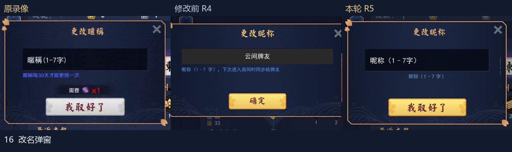
空记录框、猫图和提示回到原版位置；两侧演示战绩不同。
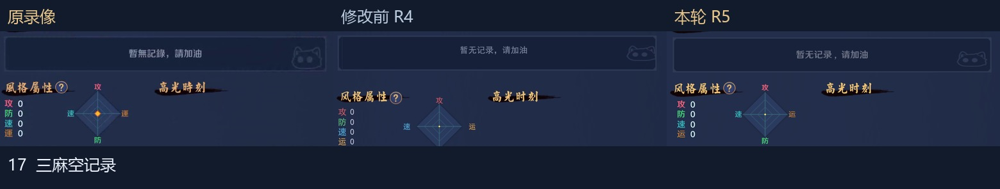